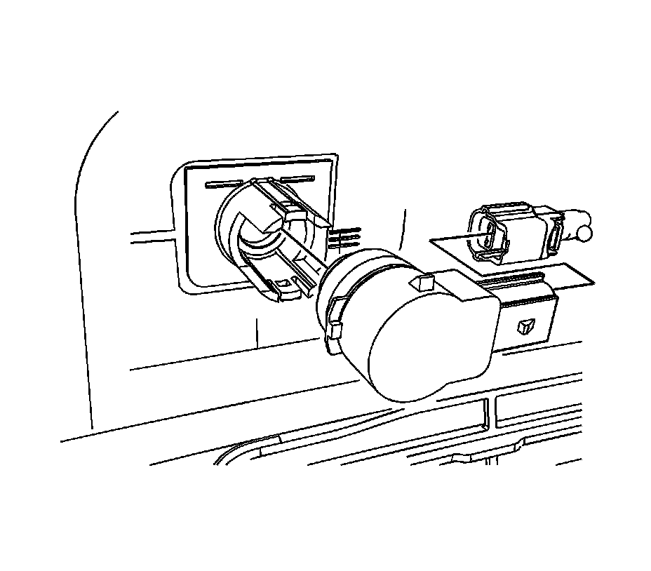

Parking Assist Distance Sensor: Service and Repair
Rear Object Sensor Replacement
Removal Procedure

1. Remove rear bumper fascia. Refer to Rear Bumper Fascia Replacement (Rear Bumper Fascia Replacement) .
2. Disconnect electrical from the rear object sensor.
3. Lift the locking tabs on the housing and remove the rear object sensor.
Installation Procedure
1. Insert the sensor into the housing.
2. Connect the electrical connector to the rear object sensor.
3. Install the rear bumper fascia. Refer to Rear Bumper Fascia Replacement (Rear Bumper Fascia Replacement) .